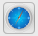
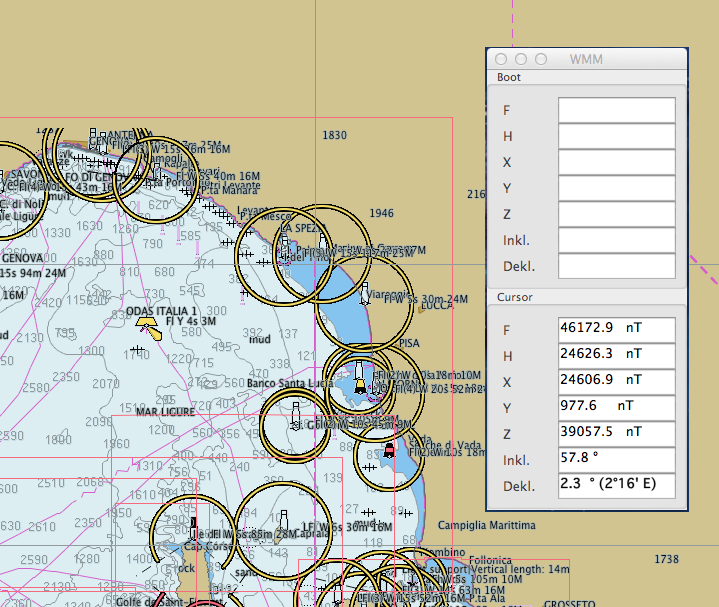
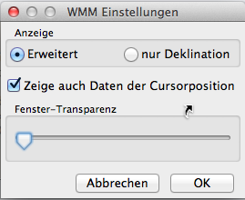
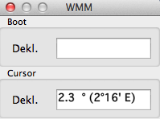

WMM Plugin
WMM steht für das World Magnetic Model. Dieses Plugin kann somit die sich permanent ändernden Abweichungen zum magnetischen Nordpol bezogen auf ein Gebiet anzeigen.
Die zugrunde liegenden Daten reichen bis Ende des Jahres 2014, danach muß ein neuer Vorhersagedatensatz eingespielt werden. Die Datei WMM.COF muß dann von http://www.ngdc.noaa.gov/geomag/WMM/ heruntergeladen und in das im opencpn.log gezeigte Verzeichnis kopiert werden.
Ist das WMM Plugin aktiviert, kann mit einem Klick auf das WMM-Symbol der Werkzeugleiste  und dann in das interessierende Gebiet je nach Einstellung dieses Plugins sowohl die magnetische Abweichung des GPS Ortes als auch des Ortes des Mauszeigers in der Karte abgefragt werden.

In diesem Beispiel war kein GPS angeschlossen, so daß nur die Daten an der Mauszeiger-Position und nicht die Daten der Boots-Position angezeigt wurden. Die Felder bedeuten im Einzelnen:
Wem das zu viele Felder sind, der kann in den Einstellungen (Werkzeugleiste/Einstellungen Lasche Plugins/WMM) sich nur die Deklination anzeigen lassen oder auch nur Boot anzeigen lassen.
 
Wie beim Grib Plugin empfiehlt es sich bei Mac OS X wegen fehlerhafter Fensterunterstützung von OpenCPN das WMM Fenster außerhalb des Kartenfensters zu plazieren und nicht wie hier gezeigt innerhalb des Kartenfensters.